Zweistufiges gruppiertes Boxdiagramm
Two_Level_Grouped_Box_Chart
Zusammenfassung
Origins Boxdiagramm wurde erweitert und ist benutzerdefiniert anpassbar. Dieses Tutorial zeigt, wie Sie ein zweistufiges gruppiertes Boxdiagramm aus Indexdaten in Origin erstellen.

Origin-Version mind. erforderlich: 2015 SR0
Was Sie lernen werden
Dieses Tutorial zeigt Ihnen, wie Sie:
- den Datenfilter zum Auswählen von Arbeitsblattdaten verwenden.
- Spalten für das Boxdiagramm stapeln.
- kategoriale Werte steuern.
- ein gruppiertes Boxdiagramm aus Indexdaten erstellen.
- Einstellungen eines Boxdiagramms benutzerdefiniert anpassen.
- den Dialog Achsen für Boxdiagramme benutzerdefiniert anpassen.
- ein Diagramm zu einem Boxdiagramm hinzufügen.
Datenvorbereitung
Dieses Tutorial ist mit dem Projekt <Origin -Verzeichnis>\Samples\Tutorial Data.opj verbunden. Öffnen Sie daher das Projekt Tutorial Data.opj und navigieren Sie zuerst zum Ordner Two-Level Grouped Box Chart.
Datenfilter zum Auswählen von Arbeitsblattdaten verwenden
Mit Hilfe der folgenden Schritte können Sie die Daten auswählen, die Sie mit dem Datenfilter analysieren möchten:
- Aktivieren Sie das Arbeitsblatt US Mean Temperature und markieren Sie Spalte B.
- Klicken Sie auf Datenfilter hinzufügen/entfernen
 auf der Symbolleiste Worksheet-Daten, um leere Datenfilter zu Spalte B hinzuzufügen.
auf der Symbolleiste Worksheet-Daten, um leere Datenfilter zu Spalte B hinzuzufügen.
- Klicken Sie auf das Filtersymbol im Spaltenkopf von Spalte B, deaktivieren Sie die Kontrollkästchen vor Alle auswählen und aktivieren Sie erneut CA, FL und TX.
- Klicken Sie auf OK, um den Filter anzuwenden.
- 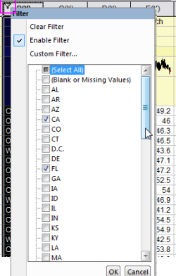
Spalten zum Konvertieren von Daten in den Indexmodus stapeln
Mit den folgenden Schritten können Sie Daten aus dem Rohmodus in den Indexmodus konvertieren:
- Markieren Sie Spalte E bis Spalte P (von Januar bis Dezember) und wählen Sie dann Worksheet: Spalten stapeln im Hauptmenü, um den Dialog Spalten stapeln zu öffnen.
- Aktivieren Sie das Kontrollkästchen vor Andere Spalte(n) einbinden, klicken Sie auf die Schaltfläche Aus Arbeitsblatt auswählen und wählen Sie die Spalten A und B im Arbeitsblatt.
- Ändern Sie Langnamen der Gruppenspalte in “Monat” und Langname der Datenspalte in “Temperatur”.
- 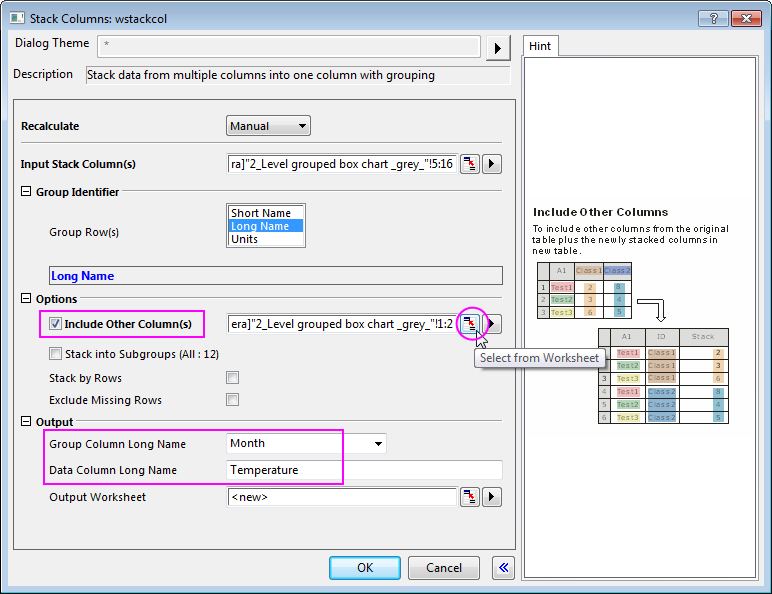
- Klicken Sie auf OK, um das neue Arbeitsblatt StackCols1 zu öffnen.
- Klicken Sie auf das Schlosssymbol im Spaltenkopf und wählen Sie Modus Neu berechnen: Kein im Kontextmenü.
- 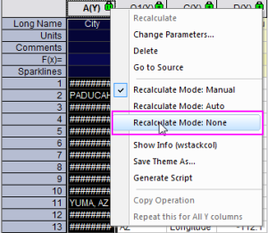
Kategoriale Werte steuern
Mit den folgenden Schritten können Sie die Reihenfolge der Werte, wie sie im Diagramm abgebildet wird, benutzerdefiniert anpassen. Es wird dabei keine Änderung an den Quelldaten vorgenommen:
- Markieren Sie Spalte B im Arbeitsblatt StackCols1 und klicken Sie dann mit der rechten Maustaste, um die Option Als Kategorisch setzen im Kontextmenü auszuwählen.
- 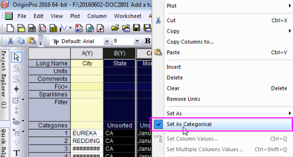
- Klicken Sie doppelt auf die Zelle Kategorien von Spalte B,"Unsorted", um den Dialog Kategorien zu öffnen.
- Deaktivieren Sie das Kontrollkästchen <auto> und legen Sie dann die Reihenfolge der Elemente fest: CA-TX-FL, indem Sie die Schaltflächen An erste Stelle verschieben
 , Nach oben verschieben, Nach unten verschieben
, Nach oben verschieben, Nach unten verschieben und An letzte Stelle verschieben verwenden.
und An letzte Stelle verschieben verwenden.
- 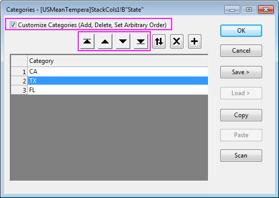
- Wiederholen Sie Schritt 2 und Schritt 3 in Spalte C, um die Reihenfolge der Elemente festzulegen: Januar bis Dezember.
Ein gruppiertes Boxdiagramm aus Indexdaten erstellen
- Markieren Sie Spalte D im Arbeitsblatt StackCols1 und wählen Sie dann Zeichnen: Kategorial: Gruppierte Boxdiagramme, Index im Hautmenü.
- Klicken Sie im geöffneten Dialog Plotting: gboxindexed auf die dreieckige Schaltfläche oben rechts im Abschnitt Gruppenspalte(n) und wählen Sie dann C(Y): Month und B(Y): State in dieser Reihenfolge im Kontextmenü.
- 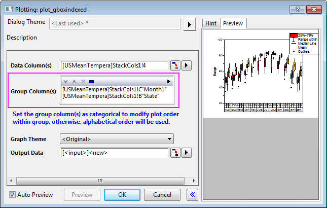
- Klicken Sie auf OK, um ein gruppiertes Boxdiagramm mit zwei Stufen zu erstellen.
- 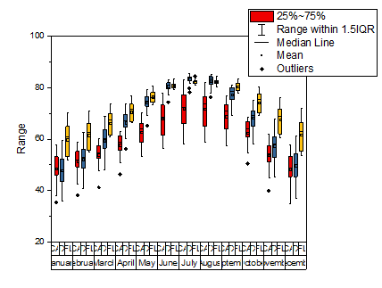
Einstellungen eines Boxdiagramms benutzerdefiniert anpassen
- Wählen Sie den Diagrammlayer (ein Klick auf eine beliebige Stelle im unteren/mittleren Bereich des Layers scheint am besten zu funktionieren) und ziehen Sie dann an den Bedienelementen, um die Größe nach eigenen Wünschen zu verändern (positionieren Sie den Cursor auf einem Bedienelement und ziehen Sie an ihm, wenn der Cursor ein Doppelpfeil wird).
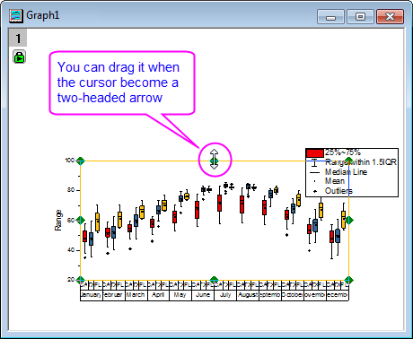
- Wählen Sie Grafik: Seite an Layer anpassen im Hauptmenü, um den Dialog zu öffnen, und wählen Sie dann Nur Höhe in der Auswahlliste Richtung einstellen, um die Seitenbreite an das Begrenzungsfeld anzupassen.
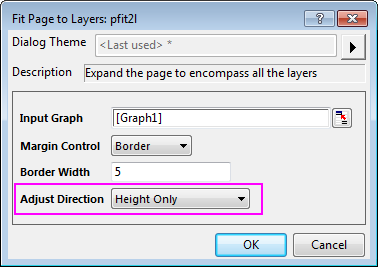
Das Diagramm sieht dann folgendermaßen aus:
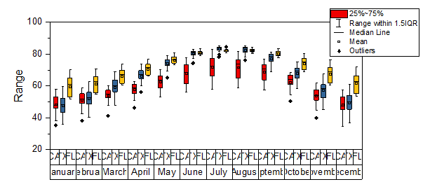
- Klicken Sie doppelt auf eine der Boxen, um den Dialog Details Zeichnung zu öffnen und zur Registerkarte Gruppe zu gehen. Setzen Sie sowohl für Randfarbe als auch für Boxfarbe das Inkrement auf Nach Eins und die Untergruppe auf Mit Untergruppe, so dass jede Untergruppe eine andere Farbe hat. Klicken Sie auf die Farbskala im Abschnitt Details und wählen Sie Grau in der Auswahlliste für Randfarbe und Boxfarbe.
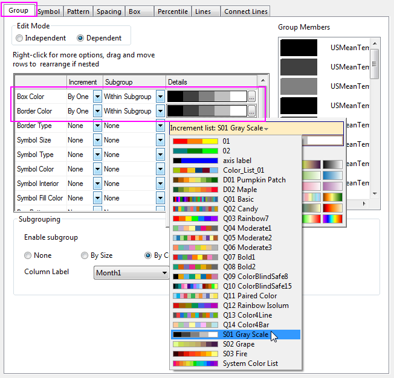
- Gehen Sie zur Registerkarte Muster, deaktivieren Sie das Kontrollkästchen Linientransparenz folgen und setzen Sie die Transparenz auf 30%.
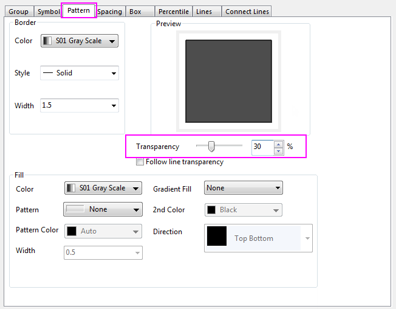
- Wechseln Sie zur Registerkarte Abstände, um den Wert für den Abstand zwischen und innerhalb der Untergruppen festzulegen.
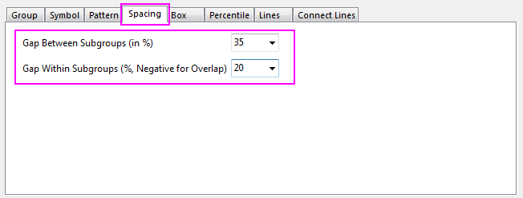
- Gehen Sie zur Registerkarte Boxdiagramm, um den Bereich von Box und Whisker festzulegen.
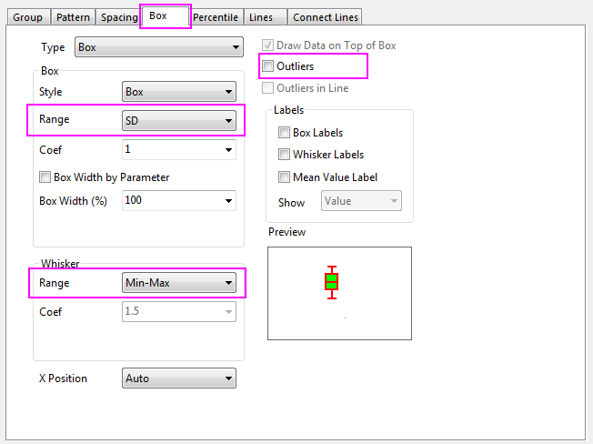
- Gehen Sie zur Registerkarte Prozentangaben, deaktivieren Sie das Kontrollkästchen vor 99%, 1%, Max. und Min. und wählen Sie dann die Form und Größe der Mittelwertmarkierung.
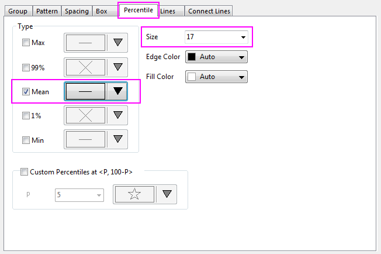
- Gehen Sie zur Registerkarte Linien, um die Whiskerenden benutzerdefiniert anzupassen und das Kontrollkästchen Median zu deaktivieren.
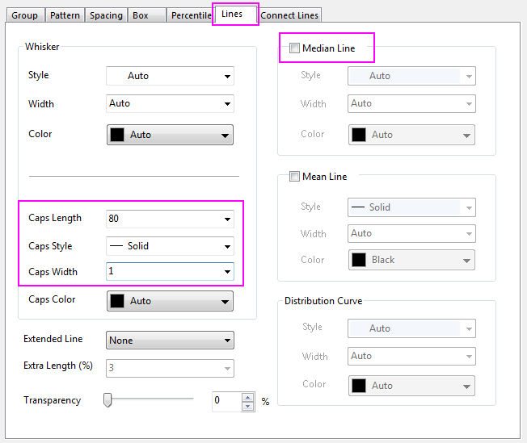
- Klicken Sie auf OK, um die Einstellungen anzuwenden.
- Klicken Sie mit der rechten Maustaste auf die Legende und wählen Sie Legende: Boxdiagrammkomponenten im Kontextmenü. Wählen Sie im Dialog 'Erweiterte Boxlegende: legendbox die Option Zustand in der Auswahlliste Boxidentifizierer.
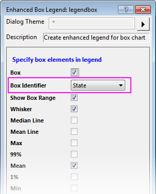
Das Diagramm sieht dann folgendermaßen aus:
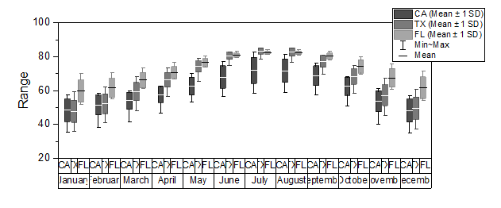
Dialog Achsen für Boxdiagramme benutzerdefiniert anpassen
- Nehmen Sie für die X-Achse folgende Einstellungen vor:
- Klicken Sie doppelt auf die X-Achse, um den Dialog Achsen zu öffnen, und wählen Sie dann Unten 1 im linken Bedienfeld.
- Gehen Sie zur Registerkarte Beschriftung der Hilfsstriche, setzen Sie die Schriftgröße von Unten 1 auf der Registerkarte Format auf 14 und duplizieren Sie die Einstellungen der Registerkarte Tabelle, wie unten gezeigt.
- 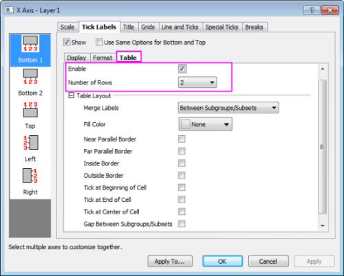
- Wählen Sie Unten 2 im linken Bedienfeld, deaktivieren Sie das Kontrollkästchen <Auto> und setzen Sie die Schriftgröße von Unten 2 auf der Registerkarte Format auf 11. Duplizieren Sie die Einstellungen auf der Registerkarte Tabelle, wie unten zu sehen.
- 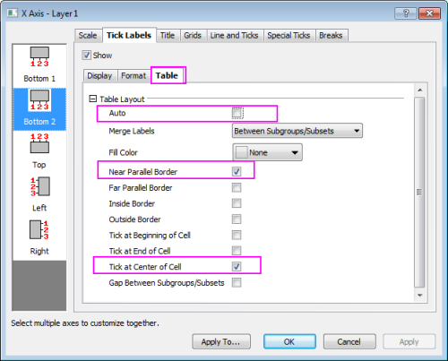
 |
Die Elemente des Tabellenlayouts werden unten gezeigt:
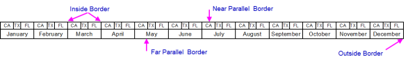
|
- Gehen Sie zur Registerkarte Linie und Hilfsstriche und ändern Sie den Stil der großen Hilfsstriche in Innen.
- 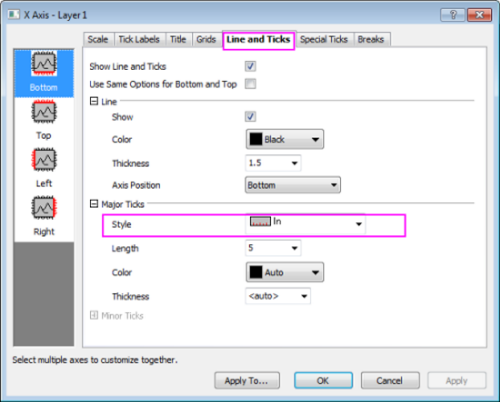
- Ändern Sie für die Y-Achse Skalierung, Titel, Schriftgröße der Hilfsstrichsbeschriftung und Stil der Hilfsstriche, wie unten gezeigt:
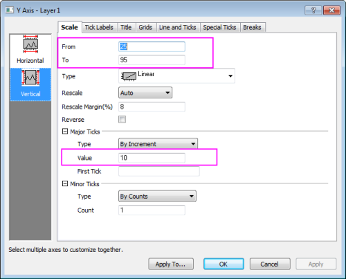
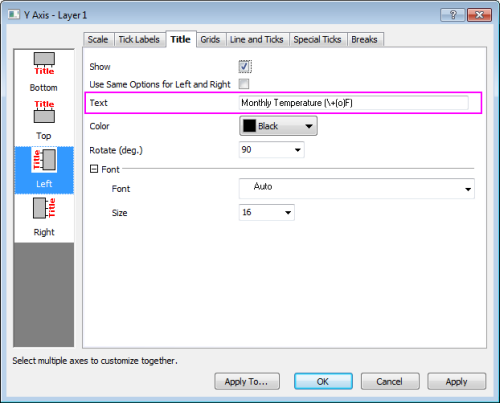
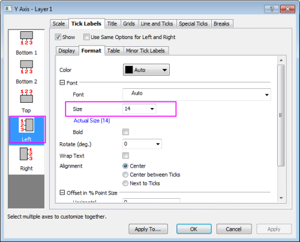
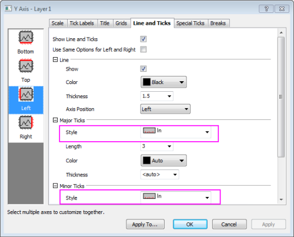
- Verbergen Sie die obere und rechte Achse der Zeichnung:
Drücken Sie die Strg-Taste und wählen Sie im linken Bedienfeld Oben und Rechts und gehen Sie dann zur Registerkarte Linie und Hilfsstriche, um das Kontrollkästchen Linien und Hilfsstriche zeigen.
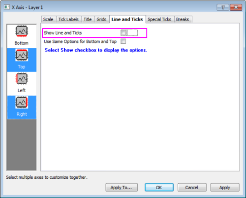
- Klicken Sie auf OK, um diese Einstellungen anzuwenden.
- Markieren Sie die Legende und klicken Sie auf Löschen, um sie zu entfernen. Das Diagramm sollte nun wie unten aussehen:
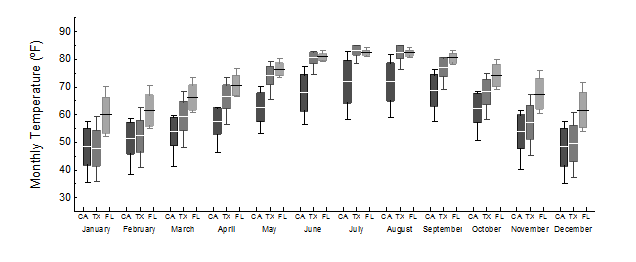
Ein grafisches Symbol der Box in ein Boxdiagramm einfügen
Wenn Sie ein grafisches Symbol hinzufügen möchten, um auf die Bedeutung von jeder Linie in der Box hinzuweisen, können Sie folgende Schritte befolgen:
- Aktivieren Sie die Arbeitsmappe US Mean Temperature, klicken Sie mit der rechten Maustaste auf die Beschriftung unten im Arbeitsblatt und wählen Sie Hinzufügen, um ein neues Arbeitsblatt in die Arbeitsmappe einzufügen.
- Geben Sie 1 bis 5 in die Zeilen von Spalte A ein.
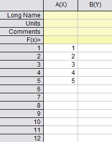
- Markieren Sie Spalte A und wählen Sie dann Zeichnen: Statistisch: Boxdiagramm, um ein einfaches Boxdiagramm zu erstellen.
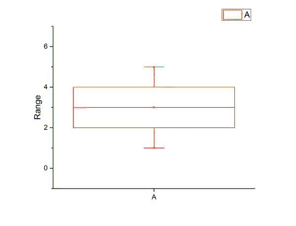
- Klicken Sie zum Öffnen des Dialogs Details Zeichnung doppelt auf das Diagramm.
- Legen Sie für das Objekt Graph2 die Breite und Höhe der Seite auf der Registerkarte Drucken/Druckbereich fest.
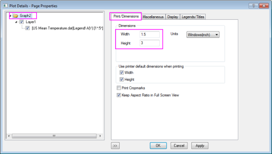
- Gehen Sie für das Objekt Layer1 zur Registerkarte Größe und Performance und legen Sie die Größe von Layer1 fest.
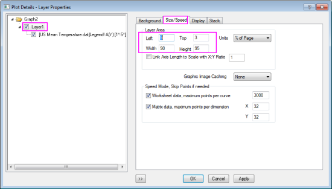
- Gehen Sie für das Objekt Box zur Registerkarte Muster und legen Sie folgende Einstellungen fest.
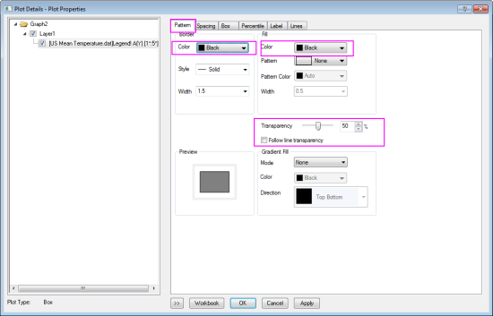
- Wechseln Sie zu den Registerkarten Prozentangaben und Linie und wählen Sie die gleiche Einstellung des gruppierten Boxdiagramms Graph1.
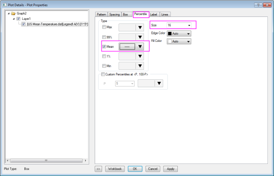
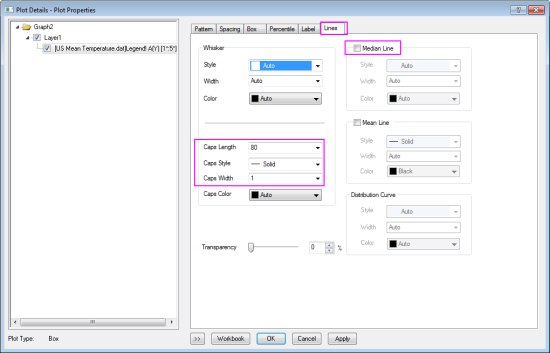
- Gehen Sie zur Registerkarte Boxdiagramm, aktivieren Sie das Kontrollkästchen vor Beschriftung der Boxen, Beschriftung der Whisker und Beschriftung des Mittelwerts und zeigen Sie sie in Perzentil. Ändern Sie dann die Breite der Box in 20% und legen Sie den Bereich für Box und Whisker fest.
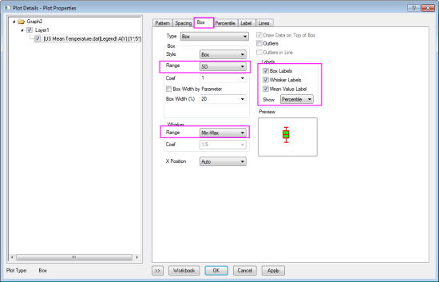
- Klicken Sie auf OK, um diese Einstellungen anzuwenden.
- Markieren und löschen Sie die X-Achse, die Y-Achse und den Y-Achsentitel Range sowie Legend von Graph2.
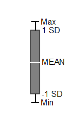
- Drücken Sie Strg + C in Graph2 und dann Strg + V in Graph1, um das grafische Symbol in das Boxdiagramm zu kopieren.
- Wählen Sie das grafische Symbol in Graph1 und verändern Sie seine Größe. Verschieben Sie es dann an eine geeignete Stelle.
Am Ende erhalten Sie das endgültige Diagramm.